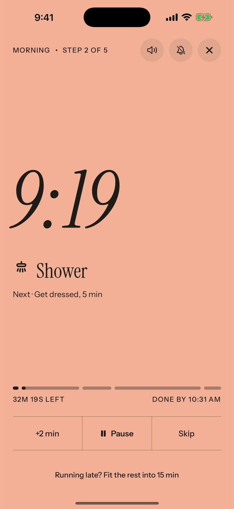
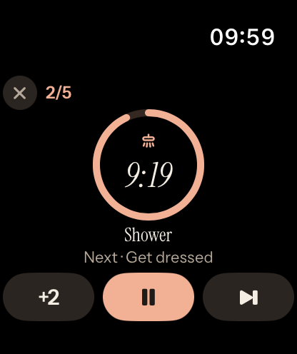
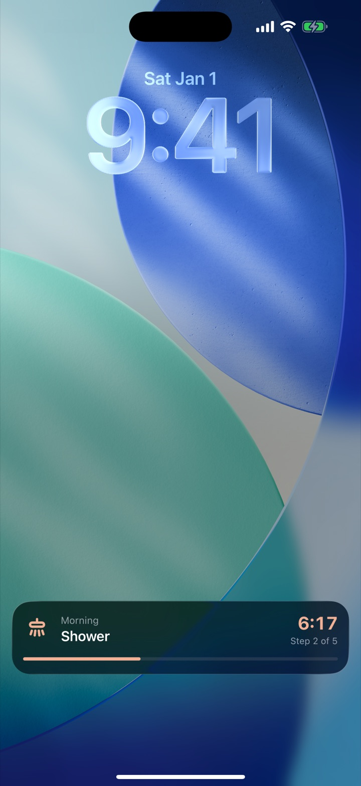
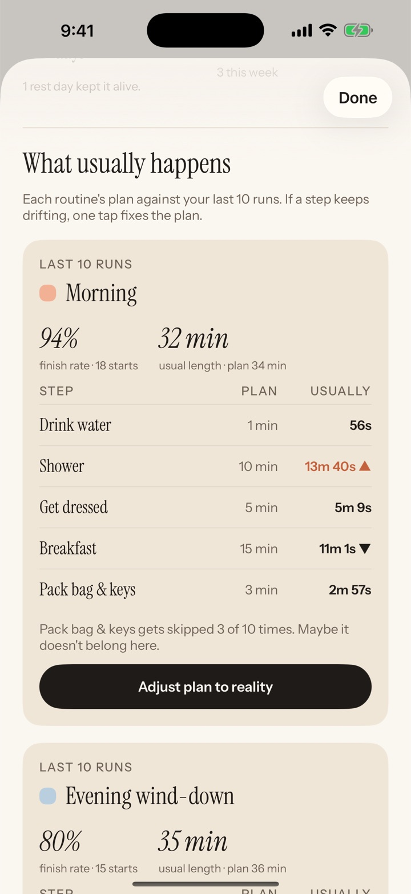
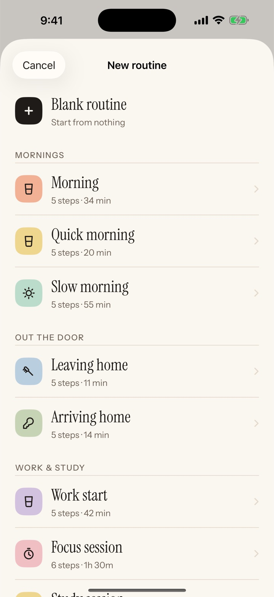

For iPhone and Apple Watch
Your routine,
one step at a time.
Sunstep plays your morning or evening routine like a playlist. One step on screen, its own timer, and a nudge when it’s time to move on. Made for brains that lose track of time.


Why it helps
Less to hold in your head.
Nothing to decide
The screen shows the step you are on and the one after it. No list to scan, no planning in the middle of your morning.
It tells you when
When a step ends, Sunstep says what’s next out loud and taps your wrist. In alarm mode it rings like an alarm clock, even on silent.
It starts by itself
Pick a time and your routine begins on its own. Starting is the hard part, so Sunstep takes care of it.
Lock Screen
Keeps counting when your phone is locked.
The current step and its countdown stay on your Lock Screen and in the Dynamic Island, so you can put the phone down and keep going.
Running late? Fit what’s left into 10, 15, 20 or 30 minutes with one tap.

Plan vs. reality
Learns how long things really take.
Sunstep keeps track of how long each step actually took. If your shower takes 14 minutes, not 10, you’ll see it, and one tap updates the plan.
Tap any day in the calendar to see how it went, step by step.

Apple Watch
Right on your wrist.
See the current step and the time left without reaching for your phone. Start a routine, skip a step, pause or add two minutes from the watch.
Templates
Sixteen routines to start from.
Mornings, leaving the house, focus sessions, evenings, medication, chores and more. Use one as it is, or change every step.
Or build your own with 126 hand-drawn icons, colors and durations.

Also in Sunstep
The small things that help.
Voice guidance
Each step and its time, said out loud.
Home Screen widget
A live countdown, or one tap to start.
Siri and Shortcuts
“Start Morning in Sunstep.”
iCloud sync
Routines and history on all your devices.
Reminders
A nudge on the days you choose.
Skip, pause, +2 minutes
Change course without losing your place.
Dark mode
Easy on the eyes late at night.
11 languages
Including German, Spanish, French, Japanese and Turkish.
Pricing
Free to start.
Use Sunstep for free with two routines of up to six steps each.
Sunstep Pro adds unlimited routines and steps, alarm mode and routines that start by themselves. Choose yearly with a 7-day free trial, monthly, or a single one-time purchase. Two days before a trial ends, Sunstep reminds you.
Privacy
No account. No ads. No tracking.
Your routines stay on your device and in your own iCloud, where we can’t see them. Sunstep does not collect any data.